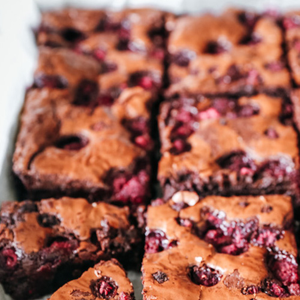

Decadent Dark Chocolate Raspberry Brownies
- 200g dark chocolate, broken into chunks
- 100g milk chocolate, broken into chunks
- 250g salted butter
- 400g soft light brown sugar
- 4 large eggs
- 140g plain flour
- 50g cocoa powder
- 200g fresh raspberries
- 100g chocolate chips

- Preparation: Preheat the oven to 180°C (160°C fan) and line a 20 x 30cm baking tray with parchment paper.
- Melt the Chocolate and Butter: In a heatproof bowl, melt the dark chocolate, milk chocolate, and butter together, stirring occasionally. Allow the mixture to cool slightly.
- Combine Wet and Dry Ingredients: Stir the brown sugar into the chocolate mixture. Add the eggs, one at a time, mixing well after each addition. Sift in the flour and cocoa powder, and gently fold until just combined.
- Add Raspberries and Chocolate Chips: Gently fold in the fresh raspberries and chocolate chips until evenly distributed.
- Bake: Pour the brownie batter into the prepared tray and smooth the top. Bake in the preheated oven for 30-35 minutes or until the brownies are set around the edges but still slightly soft in the middle.
- Cool and Serve: Allow the brownies to cool completely in the tray before cutting into squares.